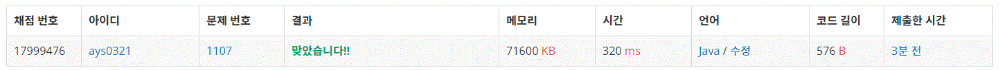

1107번 리모컨
문제요약
수빈이가 지금 보고 있는 채널은 100번이다.
수빈이가 지금 이동하려고 하는 채널은 N이다.
리모컨에는 버튼이 0부터 9까지 숫자, +와 -가 있다.
어떤 버튼이 고장났는지 주어졌을 때, 이동하기 위해서 버튼을 최소 몇 번 눌러야하는지 구하는 프로그램을 작성하시오.
public class Baekjoon1107 {
public static void main(String[] args) {
Scanner s = new Scanner(System.in);
int a = s.nextInt();
int b = s.nextInt();
boolean[] n = new boolean[10]; //고장o ->true 고장x -> false
for(int i = 0; i < b; i++)
n[s.nextInt()] = true;
int m = Math.abs(a - 100); //+-만으로 이동할 수 있는 횟수
for(int i = 0; i < 999999; i++) {
String c = Integer.toString(i);
boolean d = false;
for(int j = 0; j < c.length();j++) //숫자에 고장난 숫자가 포함되어 있으면 continue
if(n[c.charAt(j)-48])
d = true;
if(d)continue;
int p = Math.abs(a - i); //숫자에서 +-만으로 이동할 수 있는 횟수
m = Math.min(m, c.length()+p); //숫자의 길이 + +-이동횟수와 비교하여 짤으면 최숫값 저장
}
System.out.print(m);
}
}
코드 옆에 설명
